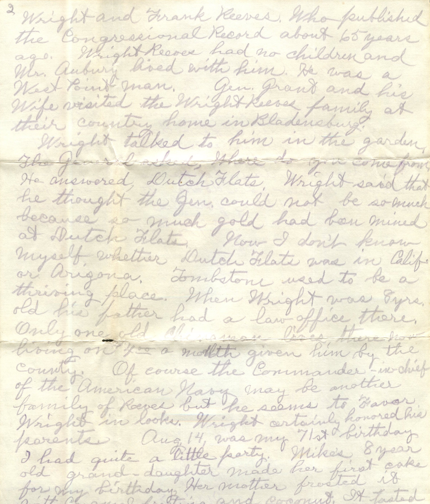
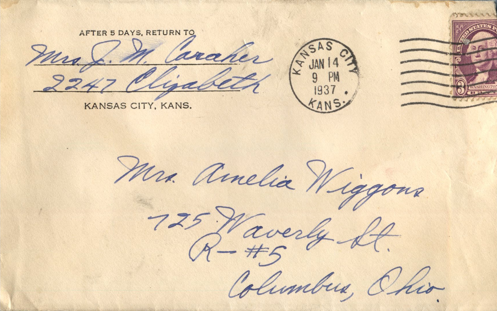
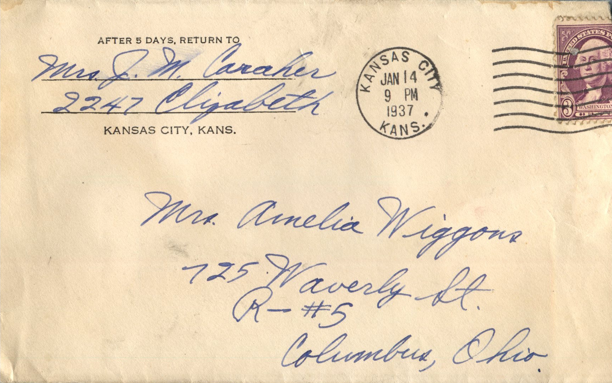

From: Lucy Clarkin, To: Amelia J. Wiggins
Mailed From: Ocean Beach, California on August 16, 1935
2062 Venice St.
Ocean Beach, California
Mrs. A.J. Wiggins
725 Waverly St. Route 5
Columbus, Ohio
Aug. 16, 1935
Dear, dear, friend,
I promised you a letter in a few days, but i have been very busy. Three meals a day don't get themselves. Dishes are stacked and washed once a day. Mike usually washes the. He also goes down to his son's house and washes dishes for his daughter-in-law.
She used to say to me when we were first married, 'What have you got to do? Just your little bit of housework?"
I might have asked her the same question but I just smiled. Mike has trained himself into being quite a satisfactory husband. Don't think I would ever take the job of training a husband. Both Mike and Mr. Aubury has good mothers who did quite a satisfactory job of training them.
Wright Aubury was really a saint and his mother a fine woman. She died six days before I married her son, but she wished me to marry him. I am quite sure that Admiral Reeves is a son of one of his cousins.
Wright had two cousins: Wright and Frank Reeves. Who published the Congressional Record about 65 years ago. Wright Reeves had no children and Mr. Aubury lived with him. He was a West Point man. General Grand and his wife visited the Wright Reeves family at their country home in Bladensburg.
Wright talked to him in the garden, the General asked, "Where do you come from." he answered Dutch Flats. Wright said that he thought the Gen. could not be so much because so much gold had been mined at Dutch Flats. Now I don't know myself whether Dutch Flats was in Calif. or Arizona. Tombstone used to be a thriving place. When Wright was 8 yrs. old his father and a law office there. Only one old Chinaman lives there now. Living on $4.00 a month given him by the county. Of course the Commander-in-Chief of the American Navy may be another family of Reeves but he seems to favor Wright in looks. Wright certainly honored his parents. Aug 14 was my 71st birthday. I had quite a little party. Mike's 8 year old grand daughter made her first cake for my birthday. Her mother frosted it with caramel frosting and coconut. It tasted something like butterscotch. The cake itself was light as a feather. apples, cake cookies and cocoa were the refreshments.
Mike's 2 grandchildren wanted to stay all night, but we are too old to have them here too much.
The other children brought me some little gifts, a nice little printed apron and a handkerchief and an English Language jacket. Mr. Clarkin gave me a $1.00 bill.
Do you receive the Household Magazine published by Senator Copper, Topeka, Kansas. He has been mentioned by Nuey Long as a possible candidate for the presidency in 1936. If you are not getting it you should be, as I ordered it sent to you about two weeks ago. I got the news over the radio a little while ago, that the airplanes in which Post and Roger were traveling had crashed and that both were killed. I had a hunch that this trip would prove disastrous and wished that Rogers would not go.
The government is expected to help out with old age pensions. The president has signed the bill for Uncle Sam to help out. It is said that the aged will not be obliged to sign away there bit of property under the new plan. I told you about my brother. He was in O.S.U. Hospital 17 days. He was pretty bad for awhile. The hunting season is on again in California.
There is usually a number of accidents due to carelessly handled guns.
I have thought that Celia might show up in San Diego during the Exposition. If she becomes a public charge she will probably be sent back to Chicago. her children may be as anxious to find her as she is to find them. Poor woman. Her mother was terribly sinned against. Have you ever heard David B. Bush talk over the radio. He is heard here at 9.13 AM. Success talks are his own poetry.
He tells stories of the failures and final success of successful men.
Mike likes corn bread and I make it once a week. It keeps his bowels in good condition.
I am eating home grown bananas. We let them ripen on the plant. The plant dies as the trees or rather plant dies. Mike does not care for them, but the orioles hang nests under the big levels every year.
Write soon and often.
Your Friend with Love,
Lucy Clarkin


 


{kind=link}
{kind=link}